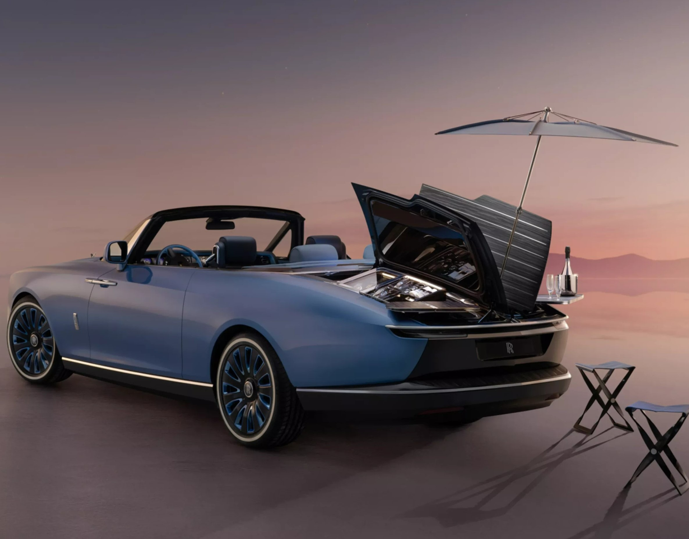
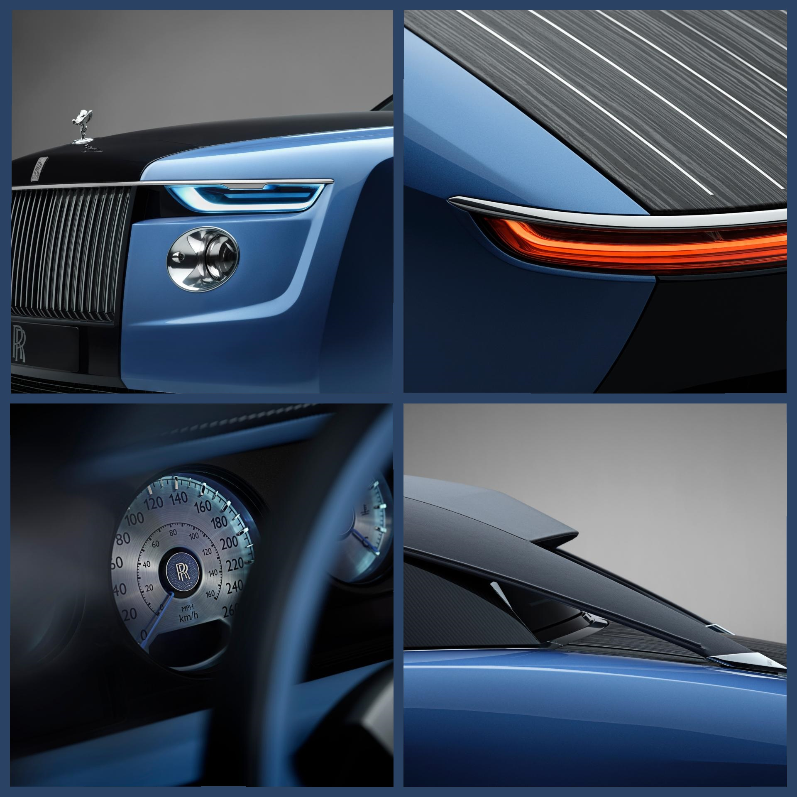
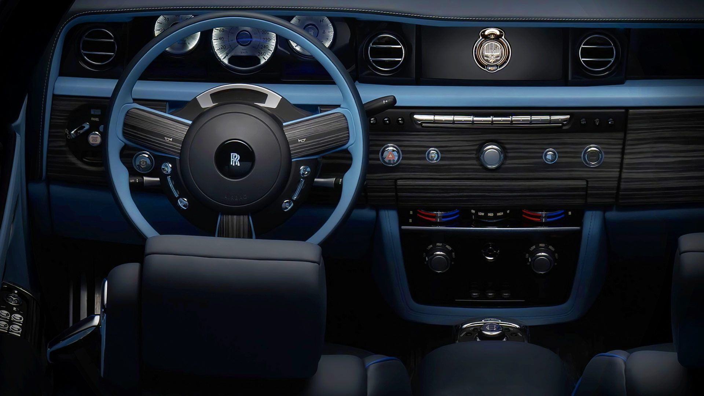
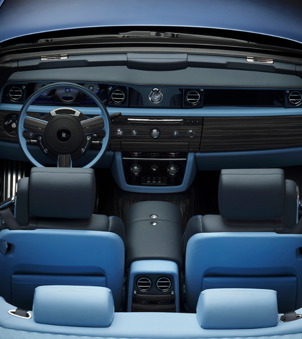
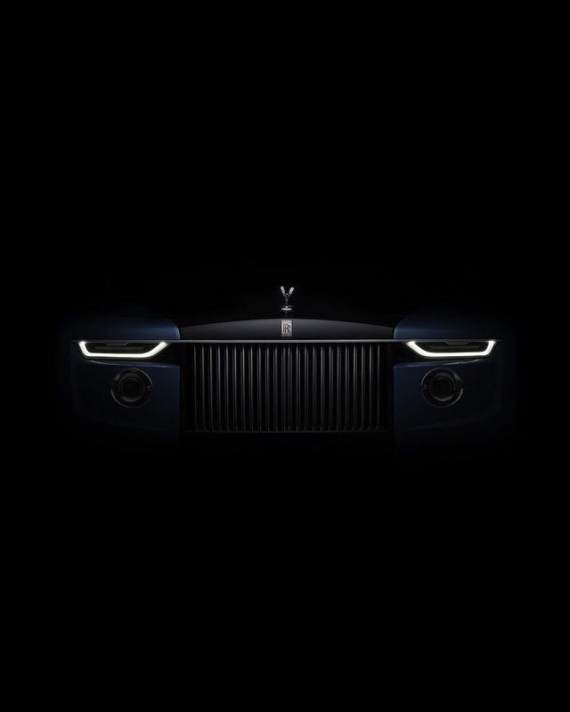
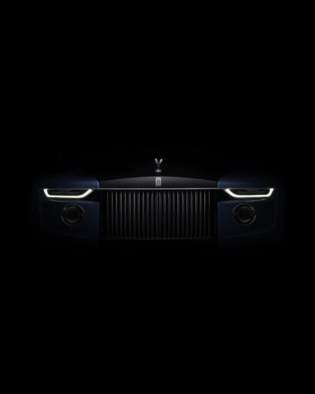
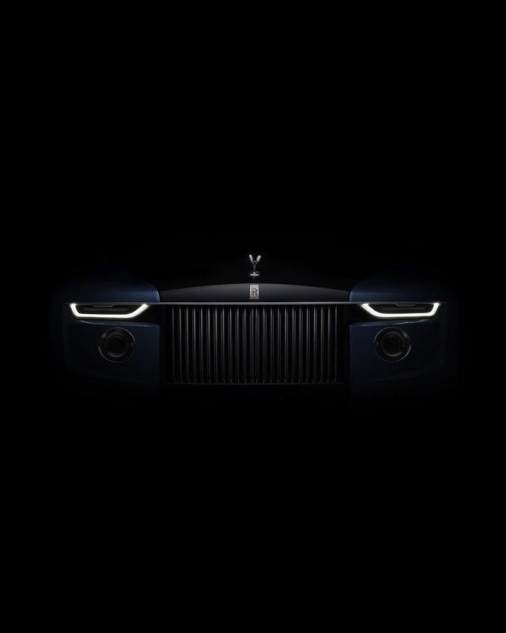

Envisioned
by extraordinary clients and realised by the master artisans of Coachbuild, this singular imagining honours
the owners’ lifelong reverence for life at sea.

ABOUT
Boat Tail is one of the most ambitious project yet. Coachbuild, in collaboration with its clients, has
ignored all preconceived notions of possibility and set a new standard. This is Bespoke at its purest. With
Coachbuild, one realises a dream in partnership with the
world’s finest designers, engineers, and artisans. Coachbuild is the physical embodiment of a client’s
character, a distillation of their utmost self. Crafted in exclusive collaboration between artisans and owners, every
element of Boat Tail is personalised perfection.
DESIGN
The car was designed by the company's specialised coachbuild division at its Goodwood plant reinterpreting the
1910s Rolls-Royce Ltd. Boat Tail car design. It draws aesthetic inspiration from yatchs of the 1920s and 1930s.
The car shares its chassis and engine with the
Rolls-Royce Phantom.
The first of three cars built features a parasol that extends from the rear
deckdeployed by a mechanical system in an inverted manner like a flower rotating cocktail tables with matching
stool seats. The deck is finished in Caleidolegno veneer and hinges towards the centre in a butterfly shape, at
an angle of 67 degrees.
The first car features matching pairs of men's and women's watches manufactured
by Bovet Fleurier which include a tiny sculpture of the car in the dial. The watches can be worn as a wristwatch
or used as a desk clock or pocket watch, and they can also be placed in a titanium enclosure on the car's dashboard
to be used as its clock. The car has a bespoke Bose Corporation sound system which uses the car's floor structure
as a resonance chamber.The instrument panel dials features
Guillochédecorative work.

‘Capturing the client’s personality is fundamental; Coachbuild elevates this principle to its highest plane.
It is an artistic skillset only existing at Rolls - Royce.’
ALEX INNES
HEAD OF
COACHBUILD DESIGN, ROLLS-ROYCE MOTOR CARS
THE HOSTING SUITE
The hosting suite has a total of five ECUs of its own and a special wiring harness that took nine months to make. All of it to make it easy for the customer to simply push a button and the rear deck opens to reveal a very expensive picnic set. The suite has a refrigerator, drinks on one side and nibbles on the other.
There's also a parasol that springs up for some shade, along with two little tables and tiny chairs to park it.

INTERIOR
There are plenty
of unique touches made to the Boat Tail. The most visible is the colour scheme, as the front seats adopt the
dark blue exterior colour, while the rear seats sport the light blue shade. This is accompanied by contrast
piping on the seats and detailed stitching all around the cabin. Another interesting detail on the interior is
that the instrument panel dials are adorned with a decorative technique named Guilloché (a technique more
commonly used by jewellers and watchmakers).
As the clients are avid pen collectors, the glove box also houses a special Montblanc pen that is
placed in a hand-crafted aluminium and leather case. Even the timepieces in the dashboard are custom made for
this Boat Tail by BOVET 1822,
The cabin's two-tone blue color scheme matches the exterior paint, with the front
seats a dark blue and the rear a light blue. There's bright blue contrast stitching and piping, the
leather has a metallic sheen to it and the lower carbon-fiber parts in the interior have a bright blue
weave at 55 degrees to echo the waves of a boat's wake.
The Boat Tail seems to completely share its
dashboard, center console, steering wheel, seats and door panels with the old Phantom Drophead
convertible, not the new-gen Phantom with which the Boat Tail shares its modular platform.
Most of the dash is covered in Caleidolegno wood to match the deck, and veneers can be
found on the center console, transmission tunnel, floor and other parts of the interior.

A ONCE-IN-A-LIFETIME EXPERIENCE
Coachbuild presents individuals of extraordinary achievement, culture, and vision to craft an entirely original motor car. With Coachbuild, one realises a dream in partnership with the world’s finest designers, engineers, and artisans.

THE PINNACLE OF BESPOKE
Coachbuild is the physical embodiment of a client’s character, a distillation of their utmost self. Crafted in exclusive collaboration between artisans and owners, every element of Boat Tail is personalised perfection.


 
